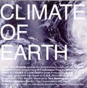

Home Artist links Label link

Climate Of Earth - Climate Of Earth
| Artist: | Climate Of Earth |
| Title: | Climate Of Earth |
| Label: | Vital Records VR-019 |
| Length(s): | minutes |
| Year(s) of release: | 2004 |
| Month of review: | [04/2006] |
Line up
Taro Matsuda - keyboards, programming, logdrum, vox
Sanjin Syugetsu - rhythm programming
Tracks
| 1) | Indonesion Frog | 5.24
|
| 2) | MIKO | 4.12
|
| 3) | Sand Dance | 4.11
|
| 4) | NAZKA | 6.08
|
| 5) | The Earth's Crust | 5.36
|
Summary
On the small cd-r label V!tal from Japan, this is a Japenese duo, who might
well be called C.O.E., but I chose to use the full name.
The music
Indonesion Frog describes quite well what you might expect. The songs on this
album are in a sense inspired by the topographic reason they are named after.
On the other hand, the vocals do not seem very Indonesion to me, more like African,
especially at first. When the pace goes up it turns into a mix of just about
everything. The bell like percussion is gives the music a gamelan feel, but the music
is more like a mish-mash of all kinds of styles, resulting in something that only
be called world music. Later the music becomes a bit too danceable.
The band continues in a variant of this style MIKO: the music is melodic, rather
repetitive, and strangely enough, to me it sounds very European. The music is
mostly rhythm and keyboards. I guess the vocal parts in the back are in Japanese
though. Too much like muzak.
Goat bells open on Sand Dance. The keyboards are rather weird, and again
I think more of the European electronic schools than anything else. The whining
singalong melody soon irritates me. Later the percussion sets in more strongly.
There is nothing here that reminds of Maghreb, except the goat bells.
We elevate to NAZKA in Peru. Again, we are more in modern Jarre territory than anything else. This music has no appeal for me, I have heard it all before.
The Earth's Crust is a burbling, gurgling piece of heavily percussive electronics.
Again, way too danceable for my tastes.
Conclusion
What is the idea behind this? They use all kinds of exotic names, but in the
end it boils down to a brand of Eurodisco and Jarre like electronics, with those
New Agey elements thrown in to make it sound world music like. The end result is
muzak and forgettable.
© Jurriaan Hage